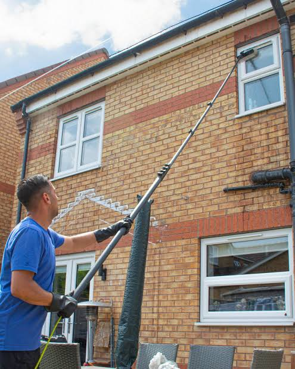
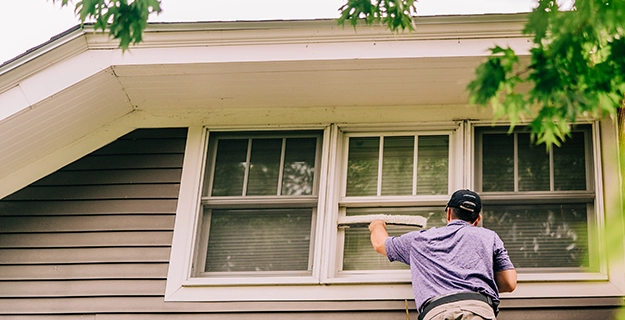
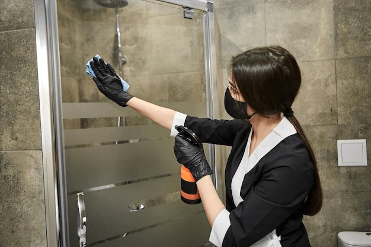
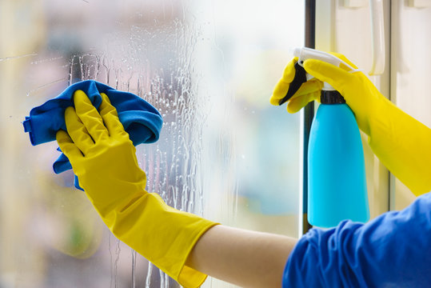
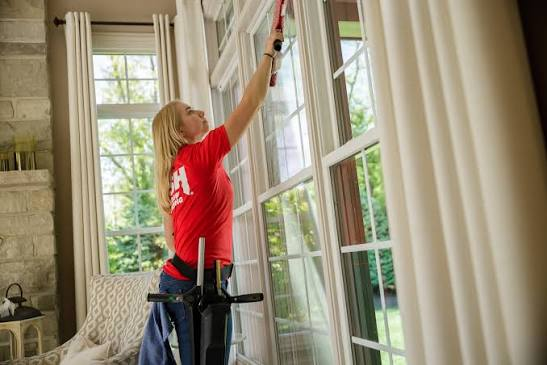

Professional commercial window cleaning that removes dirt, dust, and buildup to keep your workplace, storefront, and business windows clean and bright.
Clean windows create a brighter and more welcoming environment for employees, customers, clients, and visitors. Our commercial window cleaning service is designed to remove dirt, dust, fingerprints, and everyday buildup.
Our team carefully cleans your commercial glass, frames, edges, and accessible window areas to maintain a clean and professional appearance for your business.
Take a look at our commercial window cleaning work and the clean, professional results we deliver for businesses.





Our commercial window cleaning service covers the important areas around your business windows, helping maintain a clean and professional appearance.
Book Your CleaningWe carefully clean accessible office windows to remove dust, marks, and fingerprints.
Exterior commercial glass is cleaned to remove dirt, dust, water marks, and everyday buildup.
Accessible window frames and edges are cleaned to provide a complete and professional finish.
We focus on a clean, polished finish that helps your business windows look bright and professional.
From the initial inspection to the final check, we follow a professional process to keep your commercial windows clean and presentable.
We inspect your commercial windows and understand the cleaning requirements before getting started.
We prepare the work area and cleaning equipment needed for your commercial windows.
Our team carefully cleans the glass, frames, and accessible commercial window areas.
We inspect the finished windows to make sure the glass looks clean, clear, and professional.
See how professional commercial window cleaning can transform dull, dusty glass into a cleaner and brighter business environment.
 Before
Before
 After
After
Give your workplace a brighter and more professional appearance with commercial window cleaning.
Get a Free QuoteFind answers to some of the most common questions about our commercial window cleaning service.
The ideal cleaning frequency depends on your business location, building type, surrounding environment, and appearance requirements.
Yes. Commercial window cleaning can include accessible interior and exterior glass, depending on the service selected.
Yes. Our commercial window cleaning service can be suitable for offices, storefronts, business premises, and other commercial spaces.
The time depends on the number of windows, building size, accessibility, and condition of the glass. We can provide an estimate when scheduling your service.
Yes. Recurring commercial window cleaning can be arranged according to your preferred cleaning schedule and business requirements.
Yes. Accessible frames and edges can be cleaned as part of the commercial window cleaning service.
Schedule professional commercial window cleaning and maintain cleaner glass, brighter spaces, and a professional business appearance.